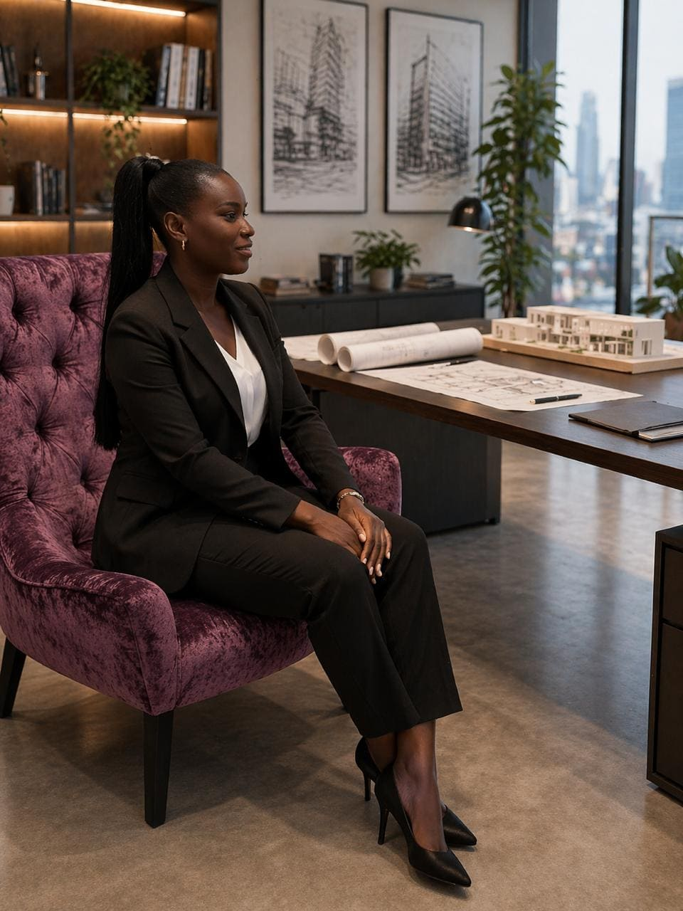
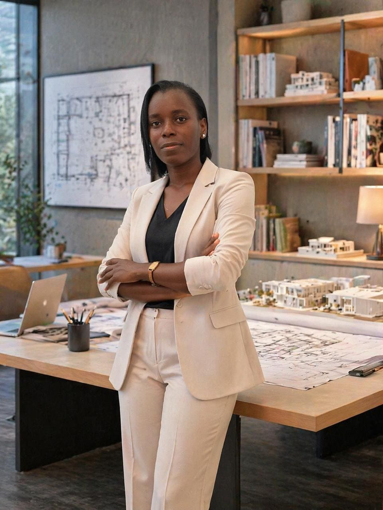

ARQUITETURA COMO REFÚGIO
Utilizar a arquitetura como um instrumento para melhorar a vida das pessoas, criando espaços que acolhem, inspiram e permanecem relevantes ao longo do tempo.
A HAVREDESIGN é um atelier de arquitetura dedicado à criação de soluções inovadoras, funcionais e sustentáveis, desenvolvendo projetos residenciais, comerciais, corporativos e institucionais com uma abordagem contemporânea e sensível ao contexto de cada espaço.
Acreditamos que a arquitetura vai além do projeto — ela influencia a forma como as pessoas vivem, trabalham e se relacionam com o ambiente ao seu redor. Por isso, cada projeto é pensado de forma personalizada, equilibrando estética, funcionalidade, conforto e identidade.
Com um olhar atento aos detalhes e à qualidade dos espaços construídos, a HAVREDESIGN cria ambientes que acolhem, inspiram e proporcionam experiências únicas, sempre com foco na inovação, sofisticação e sustentabilidade.
Mais do que projetar espaços, criamos refúgios com propósito.

HAVRE é um termo de origem francesa associado à ideia de porto, abrigo ou refúgio. Para a HAVREDESIGN, um refúgio é um ambiente capaz de proporcionar segurança, bem-estar e sentido de pertença.
Arquitetura como refúgio — excelência em cada detalhe.
Arq.ª Janette Rodrigues da Conceição é arquiteta e fundadora da HAVREDESIGN, atelier dedicado ao desenvolvimento de soluções arquitetônicas contemporâneas, funcionais e sustentáveis.
Com experiência na área de ensino e formação em arquitetura, atua na concepção de projetos que equilibram criatividade, rigor técnico e sensibilidade ao contexto. O seu trabalho abrange diferentes escalas, desde projetos residenciais e comerciais até propostas urbanas e institucionais.
Acredita que a arquitetura deve ir além da estética, assumindo um papel fundamental na melhoria da qualidade de vida, através da criação de espaços que acolhem, inspiram e respondem às necessidades reais das pessoas.
Mais do que projetar espaços, a HAVREDESIGN cria arquitetura como refúgio.

Arq.ª Janette Rodrigues da Conceição
Fundadora da HAVREDESIGN
Desenvolver soluções de arquitetura e design a partir da compreensão das necessidades de cada projeto, orientando decisões e criando espaços funcionais, acolhedores e adequados à forma como serão vividos, com qualidade, confiança e responsabilidade em cada etapa.
Ser uma referência em arquitetura e design em Angola, reconhecida pela excelência, pela integridade e pela criação de espaços que acolhem, inspiram e transformam a vida das pessoas.
Os seis valores institucionais que orientam as nossas decisões e a forma como trabalhamos.
Rigor, dedicação, atenção ao detalhe e melhoria contínua.
Honestidade, ética, transparência e responsabilidade nos compromissos assumidos.
Colocar as pessoas no centro das decisões e dos projetos.
Valorização do conhecimento, da aprendizagem contínua e da capacidade técnica.
Cooperação, escuta ativa e construção conjunta de soluções.
Consideração pelo impacto das decisões, pela viabilidade, sustentabilidade e valor gerado pelos projetos.
Cada projeto é único. Dedicamos tempo para compreender as necessidades, objetivos e identidade de cada cliente.
Desenvolvemos projetos que equilibram estética, conforto e funcionalidade, criando espaços modernos e com propósito.
Cada ambiente é concebido de forma estratégica e personalizada, refletindo a identidade de quem o utiliza.
Estruturamos cada serviço por etapas e, quando contratado, asseguramos fiscalização e apoio técnico durante a obra.
Trabalhamos com profissionalismo e planeamento técnico para garantir soluções eficientes e bem executadas.
Valorizamos a organização e o cumprimento dos cronogramas, assegurando maior confiança e tranquilidade.